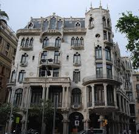
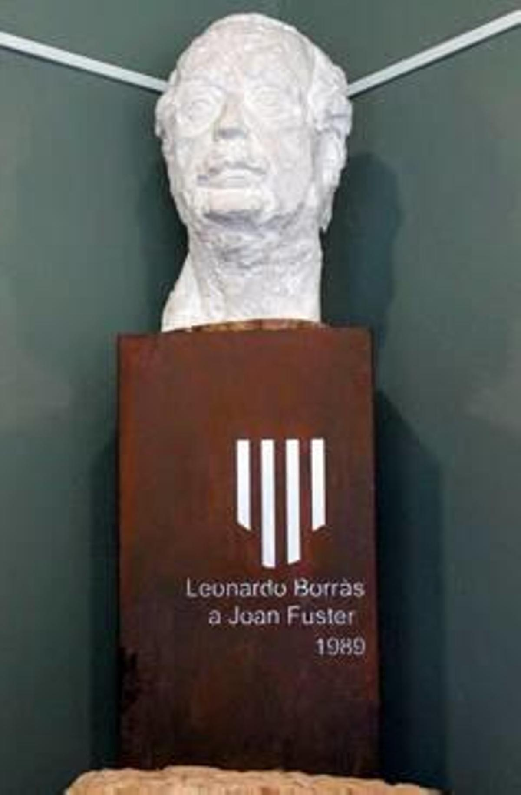

Inicio
En esta presentación aprenderás información y detalles sobre Joan Fuster que quizás no sabías.
Biografía
Juan de la Cruz Fuster Ortells, conocido como Joan Fuster i Ortells (Sueca, 1922-1992), fue un escritor fundamental que escribió en castellano y sobre todo en lengua valenciana.
Fue una figura clave en la definición de los denominados Países Catalanes y un intelectual de referencia en el siglo XX.
Áreas de Influencia
- Ensayo y Humanismo
- Crítica Literaria
- Activismo Cultural
- Historia y Política
Características de su estilo
El estilo de Joan Fuster se caracteriza por una prosa muy clara y directa, con un tono conversacional y aforístico.
Dato curioso: Su descendencia sigue presente en la vida pública, como su hijo futbolista Manu Fuster.
Obras Destacadas
Nosaltres, els valencians (1962)
El País Valenciano (1966)
Qüestió de noms (1968)
Galería Visual


Contacto
Si quieres saber más sobre la obra de Fuster, contáctanos: